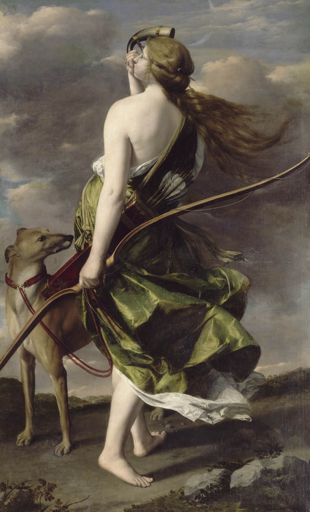

<head>
<meta charset="UTF-8" />
<meta name="keywords" content="drawing, painting" />
<meta name="description" content="drawings by Sunjy" />
<title>Sunjy</title>
<link rel="shortcut icon" type="image/x-icon" href="../../mImages/mCommon/favicon.ico" media="screen" />
<link rel="stylesheet" type="text/css" href="../../mCsses/mCommon/mCssA.css" />
<link rel="stylesheet" type="text/css" href="../../mCsses/mCommon/mCssB.css" />
<link rel="stylesheet" type="text/css" href="../../mCsses/mCommon/mCssC.css" />
<link rel="stylesheet" type="text/css" href="../../mCsses/mCommon/mCssD.css" />
<link rel="stylesheet" type="text/css" href="../../mCsses/mContent/mCssA.css" />
<link rel="stylesheet" type="text/css" href="../../mCsses/mContent/mCssB.css" />
<link rel="stylesheet" type="text/css" href="../../mCsses/mContent/mCssC.css" />
<link rel="stylesheet" type="text/css" href="../../mCsses/mContent/mCssD.css" />
</head>
<script type="text/javascript" src="../../mScripts/mContent/mContentAA.js" /></script>
<script type="text/javascript" src="../../mScripts/mContent/mContentAB.js" /></script>
<script type="text/javascript" src="../../mScripts/mContent/mContentAC.js" /></script>
<script type="text/javascript" src="../../mScripts/mContent/mContentAD.js" /></script>
<script type="text/javascript"></script> 
<script type="text/javascript">
document.write('<div class="mImgAbsolute"></div>');
/*
document.write('<p class="mFontSizeBColor" />From a white paper...</p>');
document.write('<table class="center"><tr><td>');
document.write('');
document.write('</td></tr></table>');
*/
</script>


<script type="text/javascript">
document.write('<p class="mFontSizeBColor" />Diana the Huntress</p>');
document.write('<p class="mFontSizeSColor" />“Diana the Huntress” by Orazio Gentileschi depicts Diana, the goddess of the hunt and the moon from Roman mythology.<br><br>Diana is the only pagan goddess mentioned by name in the New Testament in Acts 19:27, in some translations by her Greek name “Artemis.” The part of Acts that references the pagan goddess has been called “The Riot in Ephesus”:<br><br>“There is danger not only that our business will fall into disrepute, but also that the temple of the great goddess Artemis (some translations use the name Diana) will be discredited and her majesty deposed—she who is worshiped by all the province of Asia and the whole world.” <br><br>When the men heard this, they were enraged and began shouting, “Great is Artemis of the Ephesians!” Soon the whole city was in disarray. They rushed together into the theatre, dragging with them Gaius and Aristarchus, Paul’s traveling companions from Macedonia.…”<br><br>As a result of her reference in the Bible, Diana later became associated with many folk beliefs involving goddess-like supernatural figures that Catholic clergy demonize. In the Middle Ages, legends of night-time processions of spirits led by a female figure are recorded in the church records of Italy, Germany, and France.<br><br>Orazio Lomi Gentileschi (1563–1639) was an Italian painter. After 1600, he came under the influence of the more naturalistic style of Caravaggio. He spent the last part of his life at the court of Charles I of England. He was the father of the painter Artemisia Gentileschi.<br></p>');
document.write('<table class="center" /><tr><td>');
document.write('<br>Diana is the only pagan goddess mentioned by name in the New Testament in Acts 19:27, in some translations by her Greek name “Artemis.” The part of Acts that references the pagan goddess has been called “The Riot in Ephesus”:<br><br>“There is danger not only that our business will fall into disrepute, but also that the temple of the great goddess Artemis (some translations use the name Diana) will be discredited and her majesty deposed—she who is worshiped by all the province of Asia and the whole world.” <br><br>When the men heard this, they were enraged and began shouting, “Great is Artemis of the Ephesians!” Soon the whole city was in disarray. They rushed together into the theatre, dragging with them Gaius and Aristarchus, Paul’s traveling companions from Macedonia.…”<br><br>As a result of her reference in the Bible, Diana later became associated with many folk beliefs involving goddess-like supernatural figures that Catholic clergy demonize. In the Middle Ages, legends of night-time processions of spirits led by a female figure are recorded in the church records of Italy, Germany, and France.<br><br>Orazio Lomi Gentileschi (1563–1639) was an Italian painter. After 1600, he came under the influence of the more naturalistic style of Caravaggio. He spent the last part of his life at the court of Charles I of England. He was the father of the painter Artemisia Gentileschi.<br>" />');
document.write('</td></tr></table>');
</script>


